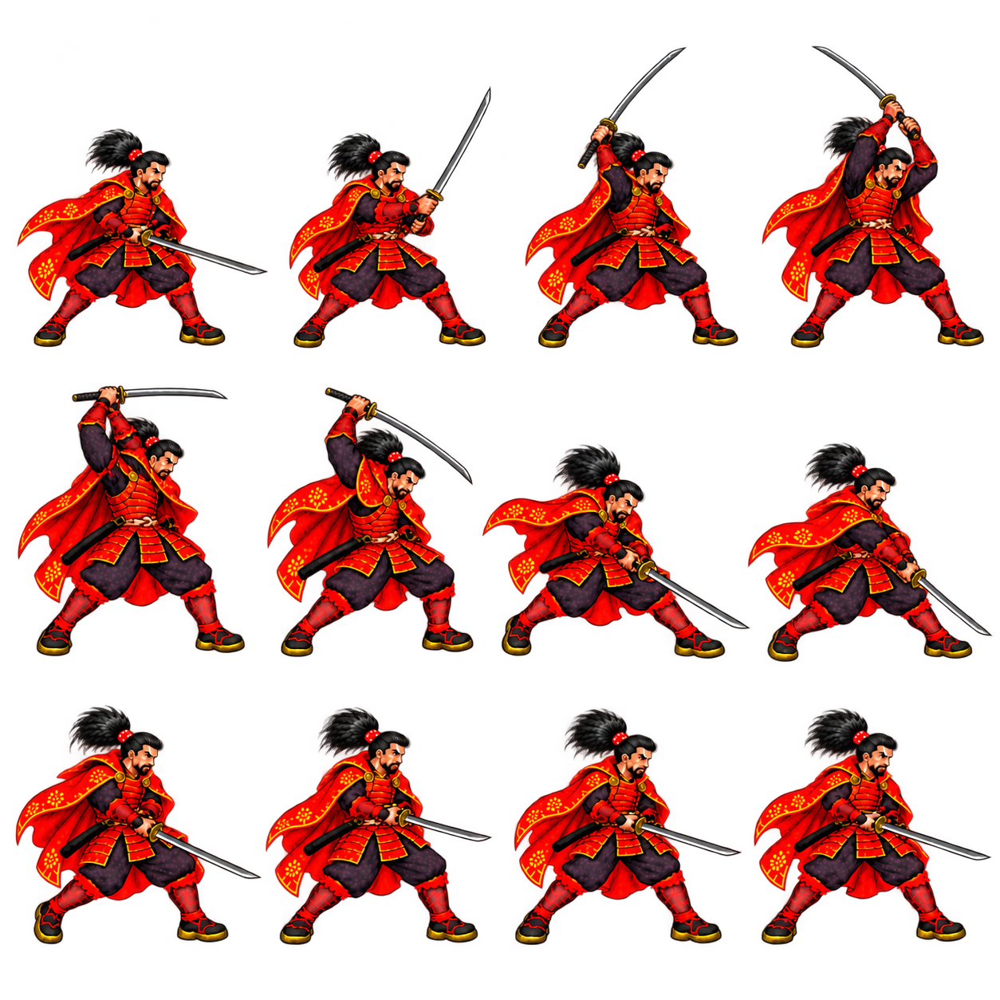
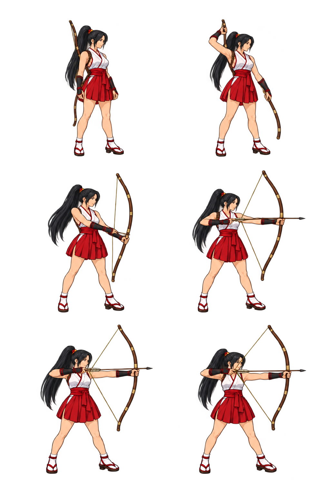
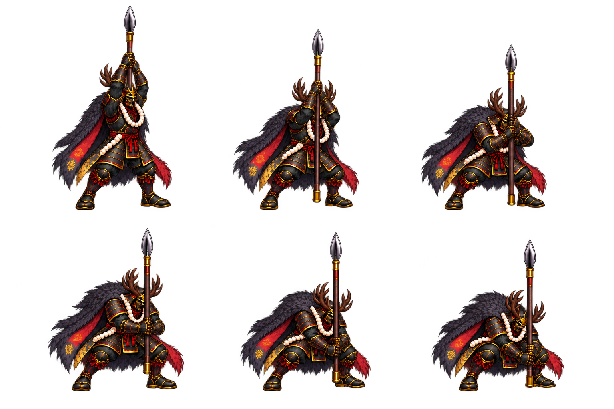
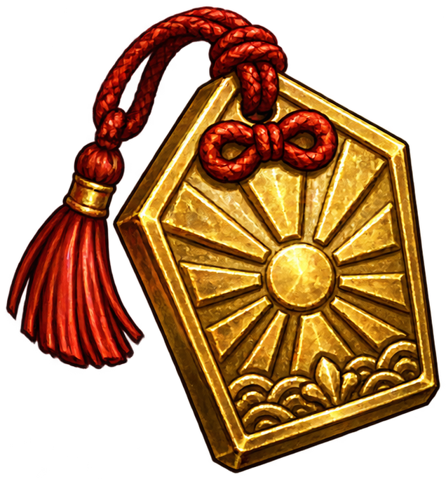
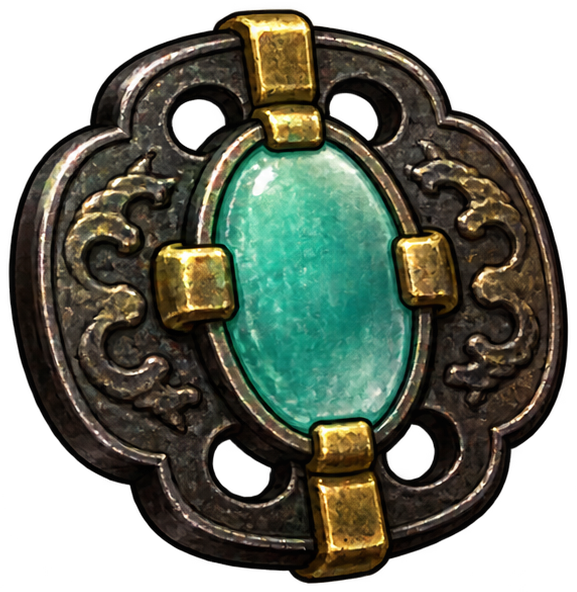
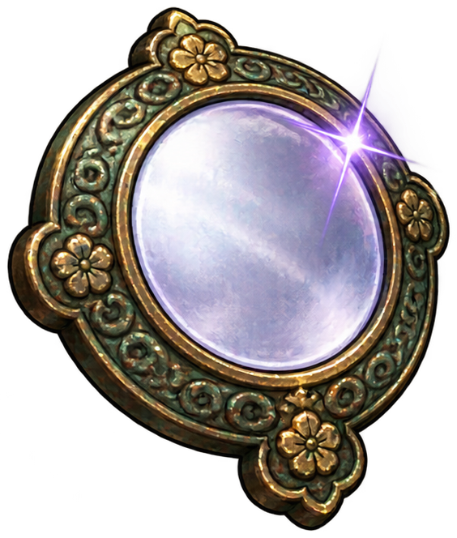

這份歷史方案記錄 v0.21 製作評估，核對的是當時信長、阿市、本多忠勝的程式與 PNG。以下六節的「目前／現有／接下來」均指當時的基線；原始盤點與分段評論保留供追溯。
v0.20 基線：915690d v0.21 當時：尚未完成外觀換裝
v0.22 現況：三位主角已完成 77 動作組、462 格新姿態，每組六格，身體與武器分層；刀、槍、弓各五種，共 15 種歷史題材武器。同類換裝、大小王掉落、HUD 武器欄與角色屬性／裝備存檔已實作。1P／2P 各角色獨立記錄，不保存關卡進度。最新使用方式與驗證入口見 主程式說明、v0.22 武器來源與規則。本頁舊素材張數及未完成描述不是新版狀態；原生渲染證據也不等於實體搖桿或真人聽感驗收。
每段評論保存於目前瀏覽器。換瀏覽器、移動檔案或清除資料前，請先匯出備份。
戰鬥已把人物、招式、投射物、劍氣分開計算，也已有通用武器拾取與加攻等級。腳底錨點可固定人物比例；信長部分刀刃軌跡與阿市出手點已有標記。
正式人物圖中的刀、槍、弓都已畫在身體圖上。程式目前沒有能替換這些武器的繪圖層，也沒有涵蓋每格的雙手持握／前後遮擋資料。
先用信長一招六格重手，把人物去武器、雙手遮擋、兩把同長度刀完整接通。接著驗證本多雙手持槍與阿市背弓／拉弦。三種難點成立後，再擴充完整動作。
更換武器的主要成本在第一次拆分／補畫人物。分層定型後，同握法、同長度級距的同類武器可重用身體影格。不同長度、不同握法或弓身變形仍要補武器角度／曲線資料；不能承諾每把武器只需一張平面圖。
信長的新持刀基準：全身比例保持現行定案，雙手握柄、刀身直立在頭的一側。待機、走路、跑步都沿用此預備姿勢，不再把刀直伸在人物前方。第一刀由頭側高位連續下揮，第二刀反切，第三刀橫切；全套一起接入後才替換現有圖，避免新舊握法跳接。
目前三位的外觀保留為基準。這輪交付的是可執行製作方案與素材盤點；新無武器人物、分層動作與外觀換装尚未製作。此次程式新增的命數、積分與護符另按遊戲版本驗收。
下表統計 v12–v17/registration.json，同一人物／clip 只取較新版登錄。這是登錄畫格數，包含仍保留但部分路由已不用的組圖；並非可玩招式數、獨立 PNG 數或每招實際播放格數。
| 角色／種類 | 最新登錄組圖 | 可用標記 | 主要缺口 |
|---|---|---|---|
| 信長／刀 | 24 組、288 格。輕手 v13、跑步 v14、勝利 v15；重手與多數技巧 v12。 | 輕手三刀共 36 格刀根／刀尖；第三刀另有 12 格單手點。 | 重手沒有刀根／刀尖、全套沒有雙手點與武器遮擋。站立另沿用舊版來源，不在本表內。 |
| 阿市／弓 | 25 組、300 格。衝刺重手／走路 v13、勝利 v15，其他主要為 v12。 | 多數射擊／飛針招式各一個出手格手點，可延用為發射位置參考。 | 出手點不是全程握弓資料；背弓、持弓、弦與箭均烘焙。踢腿與針招式需保留自己的命中規則。 |
| 本多／槍 | 29 組、342 格。v16 站立 6 格，其餘多為 12 格；v17 補蓄力、重擊地面、反應等。 | 腳底、身高與安全裁圖。沒有登錄握槍雙手或槍尖／槍尾。 | 長槍穿過雙手與軀幹前後，雙手滑握與立槍重擊必須逐格標記。舊 charge／grab／reactions 等仍留在清單，不能當作另外完成的招式。 |
v0.19 的六格步態目前套用在今川敵軍；三位主角的走路／跑步仍主要播放十二格。接下來改六格需重新選定關鍵姿勢與停留時間，不能只把既有素材數量改成 6。



通常只需「身體底層 → 武器 → 手部遮擋」三層。背負與翻身時才拆武器前後段；不用把整個人物做成可旋轉骨架，也不靠拉伸一張圖取代連續姿勢。
| 每格資料 | 用途與規則 |
|---|---|
| 腳底／身高 | 延用現有 foot anchor、body_height。只按解剖身高縮放，不把槍長、鹿角、刀光算進人物大小。左右翻面共用同一變換。 |
| 主手＋副手 | grip_main 與 grip_support 均用人物格內座標。本多兩手須同落在槍桿上；信長雙手握刀時不能旋轉新刀後把副手留在原位。 |
| 武器方向與投影 | 逐格標刀根／刀尖、槍尖／槍尾與投影長度。朝鏡頭刺、轉身或斜刃需要相應視角貼圖；只旋轉側面武器會出現紙片感。 |
| 弓、弦、箭 | 弓握點、拉弦手、上下弓梢、箭搭弦點分開標記。使用對應張弓量的弓身與弦，放箭瞬間與碰撞／音效一致；背上與手上不重複出現第二把弓。 |
| 前後遮擋 | 每格提供必要的前方手臂／衣袖圖層與武器遮罩。不得把手當成一個圓點覆蓋，也不得留殘刀或手指破洞。 |
| 發射／命中資料 | 投射物從同一格的箭搭弦點／飛針手點出發。實體刃接觸與劍氣範圍分開；核心命中區與畫面效果使用相同經校準尺寸。 |
現有 art_assets.gd 的 layers 只是站立時鞋底與上半身的切分。hand_offset 和 blade_offsets 可作為標記起點，但不代表已具備武器替換。去掉舊武器後被擋住的衣甲、手掌仍須補畫。
先鎖三人共同規格：一致線條與陰影密度、清晰透明邊緣、固定腳底與解剖比例。信長／本多沿用現行約 155 px、阿市約 148 px 的場上身高。先交三人同場比例板，再延伸到所有招式。
這是製作起始規格，保持現有重手命中 tick 14、總長 36 tick。新六格必須呈現完整刀路與肩腰轉動，不能拿同一張人物換六個刀角度。先用同長度普通刀與焰紋刀比較持握、左右朝向、刀尖範圍與傷害邊界。
每刀先按 0、2、4、6、10、15 tick 排六格，保留命中 tick 6、總長 19 tick；動作速度再由既有角色攻速映射。第一刀從頭側高位開始，六格依序「立刀 → 肩腰起動 → 刀刃下行 → 接觸 → 切穿 → 低位收勢」，沿右上到左下下揮；每張刀根、刀尖與雙手位置都連續改變。第二刀由低位反切回高位，第三刀由左向右橫切，保留第三刀向前踏步與劍氣擊退。
待機與走跑的六格上半身保持頭側雙手持柄，刀尖不穿頭、不蓋住臉、不突然前伸；衣袖、披風與腳步可以自然變化。攻擊收勢要接得回頭側立刀，連段則接下一刀起點，不插入不相干的站立格。
走路先以 60 tick／完整一循環、每格 10 tick 製作；跑步先以 45 tick／循環試拍，用 7、8 tick 交替停留。放開方向立即回站立；按住才持續循環。角色攻速可沿用既有時序映射，影格數不改動攻擊判定時點。
每格量出左右鞋尖／腳跟距離，確認「開 → 窄 → 交錯 → 換腿開」看得見；以實際遊戲尺寸播放驗收。站姿、持刀位置和身體重心要自然連回，不把站立格硬塞進移動循環。
初版三類：信長只能拿刀、本多只能拿槍、阿市只能拿弓。兩人合作可由適合的人拾取；不相符的寶物保留在地上，短提示「需要長槍／太刀／長弓」，不扣除、不改裝備。
| 候選武器 | 建議效果（待平衡） | 適用限制 |
|---|---|---|
| 焰紋太刀／刀 | 刀擊傷害 +15%；重手末段帶小量燒傷。 | 不改抓摔與起身震開傷害；不疊加既有招式燒傷為無限傷害。 |
| 嵐切／刀 | 已存在的劍氣範圍 +25%、擊退 +20%；不增加基礎刀傷。 | 本體刀刃仍依可見长度命中，不能讓無劍氣的招式憑空變長。 |
| 震岳槍／槍 | 重手擊退 +30%；重手收尾可震倒雜兵。 | 大小王保留抗倒與起身保護；輕手不變成每擊必倒。 |
| 寒月弓／弓 | 箭傷 +10%、指定強箭的單體冰凍略增。 | 飛針與踢腿不套用箭傷；不恢復全穿透，不擴大冰爆和衝擊波為全場。 |
每人同時一把。新同類武器替換原裝備，先不加入背包、鍛造或自由混搭。初版武器保持同一握柄與長度級距，先透過材質、刀鐔、槍頭、弓飾與效果辨識；尺寸真的變大時，連同可見刃長與命中範圍一起校準。
資料最少包含：weapon_id、family、加攻、劍氣倍率、擊退倍率、指定招式擊倒、元素與圖像。投射物發射時保存當次武器效果，避免箭飛到一半換裝就改變傷害；網路主機判定拾取與傷害，快照同步當前武器與掉落。

金色主體、紅繩，視覺簡單明確。

深鐵護身輪廓，中央青綠玉。

古銅鏡緣、白紫鏡面，標示高抵傷量。
上方是本輪已生成的透明道具圖，預覽放大為 112 px；遊戲預定高 56 px。圖源、裁切與 SHA 紀錄。
| 驗收面向 | 必須看見的結果 |
|---|---|
| 素材 | 六個真正不同姿勢；透明邊緣無糊暈；所有武器在畫框內，裁圖不露鄰格。身體不隨刀槍大小縮放。 |
| 持握／遮擋 | 每格主副手貼握柄、指節壓在前方，翻面不破位；本多槍桿同時穿過兩握點；阿市背上與手上只有一把弓。 |
| 信長新預備姿勢 | 維持全身比例；頭側立刀雙手握柄。待機、走路、跑步沒有前伸舊刀，第一刀逐格下揮、第二反切、第三橫切。三刀連接與回到預備姿勢都沒有手位跳躍。 |
| 時序 | 0.25 倍檢查逐格，1 倍檢查節奏。揮擊命中格對上音效與判定；走路開窄清楚、停走立即站立、腳底不滑動。 |
| 戰鬥 | 刃尖剛碰得到就命中、刃尖外不命中；劍氣可見範圍與傷害一致。倒地保護、首領抗倒、抓摔、蓄力及投射物規則不退回舊版。 |
| 裝備 | 各角色都測匹配與不匹配拾取，雙人同時靠近只讓一人拿走；死亡／重生／切場保留規則一致；客户端不自行生成裝備效果。 |
| 整合證據 | 交 6 格聯絡表、帶錨點檢查板、三人同場截圖、原速短片、判定邊界測試及可啟動主程式。素材圖、靜態檢查、實際遊戲視覺各自列結果。 |
第一個里程碑就是「信長重手兩把刀、六格真動作、左右手握住、刀尖範圍一致」；此時再確認分層品質，便能避開一次返工三人的全部影格。